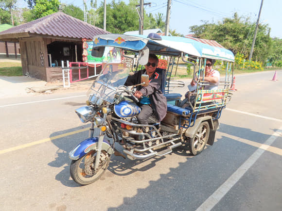
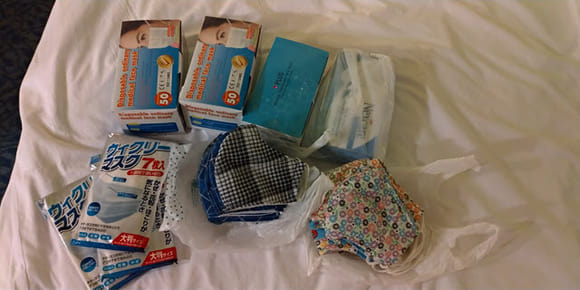
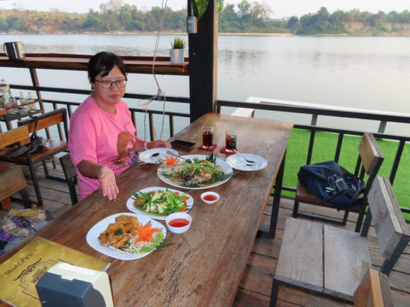
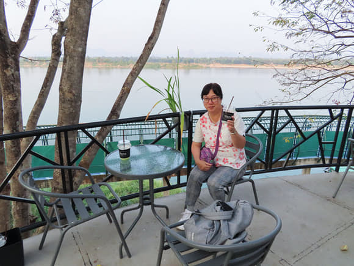

1月22日 – 2月10日 逃出武肺
早在大半年前已計劃這旅遊計劃， 怎料竟成為避年的最佳選擇， 整體旅程大部份地點都有 shopping mall，只是有幾個小鄉鎮沒有購物中心，郊遊的風景也有別於以前所到的，今次主題是看荷花， 交通工具有泰國篤篤，雙條車(巴士), 古老火車, 一次乘私家車( 因為晚上七點後已沒有公共交通工具，幸好有個司機幫我哋搵到個下班的叔叔， 他駕著私家車載我們一程收費150匹
感覺泰東北這邊的民風很簡樸，一般人都很有笑容，可能生活簡單，所以小煩惱，由我們出發前中國已出現武漢肺炎，由於香港政府的廢官辦事無能，引致口罩嚴重短缺，市民紛紛搶購， 即使有些良心商人提供貨源，但因為缺貨不足應付廣大市民的需要， 真是一罩難求! 大家都苦著面對，我在泰國每一站都尋找有口罩賣的地方和藥房， 成為今次旅程的一項使命，由最初可以買到一盒50片， 其中有好些店已經完全缺貨，到最後只能在數處藥房(不同地區)逐間買到五至十片，也是當地的限制銷售，這樣也是合理的，以便人人都會有口罩用，避免有些人團積大量貨，而有些需要的人卻買不到
以往在旅遊期間購物是開心輕鬆的，但今次卻是心情沉重的，知道香港的貨源很缺，有些將價錢抬高，即使有良心商人提供貨源，市民亦要通宵輪候才買得到，真的無法想像
我倆比較喜歡吃魚，在泰國 order 魚吃，他們的 Menu 是寫 Cat fish,不知他們找誰做翻譯，所有泰國菜館的魚都叫做貓魚(Cat fish)，有一次我問店員 cat fish 是否 very small ？他用有限的英文回答說：No, is big fish cut into small pieces…. Oh I see
泰國曼谷地鐵叫 MRT, 而香港的是 MTR, 如果習慣講了港式 MTR, 他們會抖正的。泰國地鐵站已有健康檢疫，入閘前有職員看守
即使現在是年初，亦算是泰國的冬天，但曼谷卻是很熱，每每外出都需要找 coffee shop 避暑，飲杯冰凍綠茶 cool down 一吓! Alex 將全年飲綠茶的 Quota 用在泰國之旅，一次過完全消耗盡! 哈哈!因為在香港飲一杯差不多要 60港元呢!而且没有這個需要，而且綠茶會有飽肚的感覺，影響正餐胃口
回程的心情很矛盾，又好想返家又怕回香港， 怕的當然是疫情啦! 回來點算一吓口罩和分配給親友，只留部分自己備用， 有些是可循環再用的布口罩，可以洗的，萬一長期作戰都有得用，這個旅程的shopping 目的全是找尋口罩，有異於以往購物的心情，難以形容!